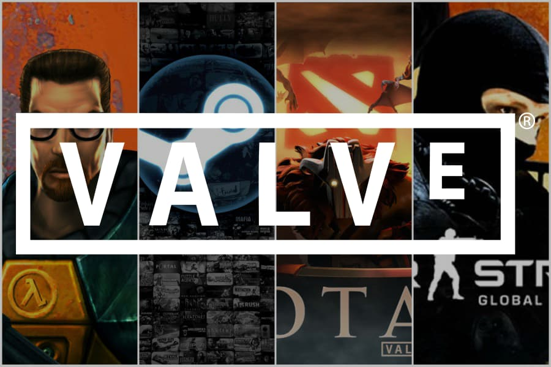

¿Cual es la historia de valve?
La empresa debutó con Half-Life en 1998, un juego de disparos en primera persona que revolucionó el género con su narrativa inmersiva y diseño de niveles integrados. Su éxito consolidó a Valve en el mercado. En 1999 y 2001, Valve lanzó expansiones como Half-Life: Opposing Force y Half-Life: Blue Shift, que ampliaron el universo del juego. En 2004, Valve lanzó Half-Life 2 utilizando el motor Source, que ofreció gráficos mejorados y una física realista, siendo aclamado por su innovador diseño y narrativa. En 2007, Valve lanzó Portal y Team Fortress 2 como parte del The Orange Box. Portal presentó una mecánica de portales innovadora y una narrativa única, mientras que Team Fortress 2 destacó por su estilo gráfico distintivo y enfoque en el trabajo en equipo. Steam, lanzado en 2003, comenzó como una plataforma para actualizaciones de Half-Life pero pronto se convirtió en un sistema de distribución digital para juegos de PC, revolucionando la industria al ofrecer una plataforma centralizada para la compra, descarga y gestión de juegos.
En 2013, Valve adquirió los derechos de Defense of the Ancients (Dota) y lo transformó en Dota 2, un exitoso juego MOBA que se convirtió en un pilar de los eSports. En 2015, Valve se aventuró en la realidad virtual con el lanzamiento del HTC Vive en colaboración con HTC, y desarrolló juegos como The Lab para demostrar las capacidades del hardware de VR. En 2020, Valve regresó a la serie Half-Life con Half-Life: Alyx, un juego de realidad virtual que recibió elogios por su innovador uso de VR y narrativa inmersiva. Además, Valve exploró el hardware con productos como la Steam Machine, Steam Controller, y la Steam Deck, una consola portátil basada en PC lanzada en 2021, bien recibida por su capacidad para ejecutar juegos de PC en formato portátil. Hoy en día, Valve sigue siendo una fuerza importante en la industria de los videojuegos, con Steam como una plataforma clave para la distribución digital. La empresa continúa innovando con nuevos proyectos y exploraciones en áreas como la realidad virtual y el hardware de juegos, reflejando su compromiso con la evolución y el progreso en el entretenimiento interactivo.
